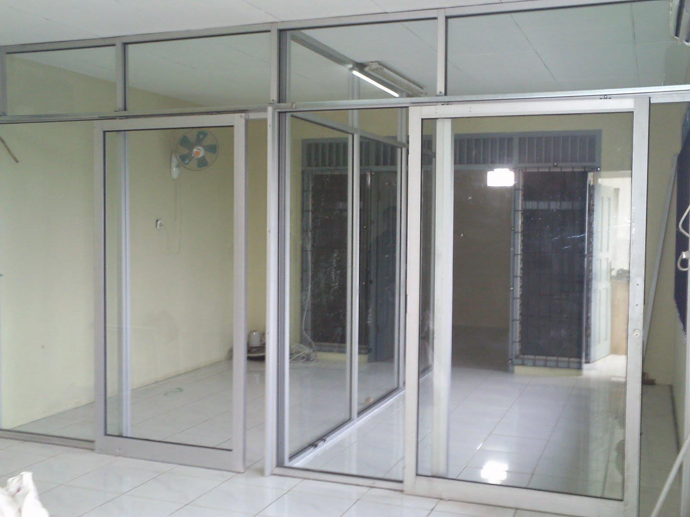
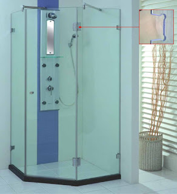
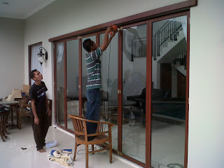

Semakin berkembangnya kemajuan zaman, menjadikan banyak bahan atau material komplemen yang bisa mempercantik hunian atau daerah usaha anda. Banyak material penunjang yang bisa dipakai seperti kaca, parket lantai kayu dan masih banyak lagi. Tak hanya memperindah, namun material pelangkap hal yang demikian bisa memberi garansi keamanan pada penghuni di dalamnya. Melainkan, tak cuma estetika melainkan juga keamanan bagi penghuni di dalamnya. Tidak halnya hadir berjenis-jenis material kaca dan juga lantai yang semakin melengkapi nilai keindahan sebuah bangunan. Banyak macam dari kaca yang dapat di gunakan untuk banguan maupun rumah tinggal.
Kini telah hadir beraneka maca ragam kaca yang bisa ditemui, tiap kaca mempunyai fungsinya masing-masing. Bisa untuk system keamanan, keindahan dan masih banyak yang dapat di temukan dari pemasangan kaca. Macam kaca-kaca hal yang demikian diantaranya merupakan kaca tempered, kanopi kaca, kaca frameless, kaca cermin, railing kaca dan masih banyak macam kaca lainnya yang dapat anda dapatakan dan anda aplikasikan pada bangunan. Setiap kaca mempunyai fungsi masing-masing yang membikin banyak orang kian mebutuhkannya dari hari ke hari. Berikut ini sedikit review mengenai kaca bagi sebuah banguanan, fungsi utama dan bagaiman memilih kaca yang pantas untuk sebuah hunian bagus rumah, kantor maupun gedung. Akan di jelaskan juga mengenai lantai kayu jati terbaik yang dapat anda beli.
Distributor & Supplier Partisi Kaca di Binjai

Partisi ini kini tidak lagi dipakai di perkantoran, hotel, atau perbelanjaan saja. Telah banyak properti yang menggunakan bahan berupa kaca sebagai partisi. Anda bisa lihat di pusat perbelanjaan modern, hotel, dan juga perkantoran. Banyak ruangan yang disekat dengan memakai partisi kaca Binjai. Alasan yang kedua, partisi kaca Binjai ini membuat ruangan menonjol sungguh-sungguh minimalis. Ini dengan konsep atau desain properti saat ini. Tak rumah, sekarang perkantoran juga sedemikian rupa supaya kelihatan minimalis dan menarik. Lain sekiranya Anda memilih mengaplikasikan partisi kaca. Bahan ini lebih murah dan dalam pemasangan. Jadi, Anda akan amat berhemat bila memilih untuk memasang partisi kaca ini. Dis.or.id menjual beragam jenis kaca penyekat yang kualitasnya terbaik. Bila anda kesulitan untuk memasang dinding kaca penyekat, dis.or.id menyediakan jasa pemasangan dinding kaca penyekat untuk kamar mandi rumah anda. Disana anda akan partisi kaca yang pantas dengan keinginan anda.
Info Pemesanan Selengkapnaya
Google Maps: https://www.google.com/maps/d/viewer?mid=1R8kzChlMY2QK17rdE2QwzgHqdyqkVgbb&ll=-7.27380280025364%2C112.65243155000007&z=18
Note: https://www.facebook.com/notes/distributor-of-industrial-supply/pabrik-supplier-partisi-kaca-kamar-mandi-kantor-r-tamu-dlsb/1785723915060821/
Event: https://www.facebook.com/events/538733799826380/
Distributor & Supplier Kaca Shower

Pintu Kaca Shower pada kamar mandi yakni salah satu opsi yang bagus untuk desain interior kamar mandi modern. Kecuali tersebut kini dapat anda lakukan dengna menggunakan kaca shower untuk kamar mandi anda. Kelebihan shower screen dibanding dengan cara penyekatan yang lain adalah dihasilkan dalam bentuk yang sudah jadi dan tinggal dipasang saja. Penyekat ini akan memisahkan antara daerah basah yang dipakai untuk mandi atau meletakan shower dan daerah lain yang adalah zona kering.
Tidak anda sedang mencari kaca shower untuk kamar mandi, anda dapat segera mengunjungi dis.or.id. Disana anda bisa mendapatkan kaca shower yang pastinya pantas untuk kamar mandi anda. Anda dapat buktikan sendiri.
Distributor, Supplier & Jasa Pasang Kanopi Kaca
Seiring dengan perkembangan zaman di dunia properti, kini kanopi kaca sudah berkembang pesat mengikuti arsitektur modern. Seiring dengan perkembangan zaman di dunia properti, kini kanopi kaca terlah berkembang cepat mencontoh arsitektur modern . Harga dari setiap kaca yang ditawarkan cukup berbagai tergantung kaca yang nanti akan digunakan. Jadi sudah tidak heran lagi semua orang mau mencari harga yang sungguh-sungguh kompetitif untuk menyesuaikan budget atau anggaran mereka masing – masing untuk membuat produk canopy kaca. Seandainya tembus pandang, kaca meresap sinar yang masuk sehingga semakin tebal kaca karenanya kian sedikit sinar yang dapat melaluinya, karenanya sifat transparannya makin berkurang.|Di samping pintu kaca shower akan membikin kamar mandi kecil terlihat lebih besar. Pada atap akrilik, penyerapan sinar yang terjadi demikian kecil sehingga walaupun ketebalannya bertambah, sifat transparannya tak banyak berubah.
Sekarang anda bisa menerima kanopi kaca dengan kualitas terbaik dan juga berkwalitas di dis.or.id. Sesudah kaca untuk atap kanopi cukup digemari. Disana anda akan memperoleh kanopi kaca yang sesuai dengan beraneka ketebalan dan harga yang cukup terjangkau.
Jasa Maintenance Kaca
Jasa maintenance kaca menjadi solusi bagi Anda yang memiliki gedung yang terbuat dari kaca. Kaca menjadi kusam. Bila itu, sanggup membersihkan bangunan kaca melengkung.
Sekarang juga hadir maintenance kaca untuk membersihkan kaca berbentuk melengkung. Dis.or.id menyiapkan semua macam kaca sesuai keperluan saat ini.
Tidak anda mebutuhkan jasa maintenance kaca, anda dapat mengunjungi dis.or.id. Untuk itu, alat-alat wajib lengkap sehingga kami mampu membersihkan semua sudut gedung. Dengan sudah memberikan training kepada daya spesialis sehingga mereka telah bisa melakukan profesi mereka dengan sangat bagus.
Jasa Pemasangan Kaca Tempered

Disana anda bisa memanfaatkan jasa maintenance kaca dengan daya pakar yang cakap membersihkan gedung kaca dengan produk pembersih kaca apa yang terbaik untuk menghilangkan kotoran dan kusam. Dengan pengerjaan pendinginan yang cepat membikin kaca mempunyai kelenturan dan tenaga yang bagus kepada tekanan di kedua sisi permukaan kaca. Sementara itu, untuk rumah hunian, komponen dari rumah seperti kamar mandi serta kanopi biasanya terbuat dari kaca tempered. Kecuali sembarang tukang juga bisa melaksanakan cara kerja pemotongan ini. Untuk gedung perkantoran, komponen yang paling kerap kali dijadikan dengan bahan yang satu ini ialah jendela dan pintu. Selain ini tak lain karena semakin banyak orang yang memahami mutu serta keunggulan dari kaca tempered ini.
Untuk itu, dis.or.id hadir sebagai penyedia jasa pemasangan kaca tempered yang telah berpengalaman. Tidak anda beratensi untuk memasang kaca temeperd, anda hanya tinggal mengunjungi web dis.or.id. Bukan sembarang alat yang digunakan untuk memotong kaca tempered layak dengan kebutuhan. Tidak saat ini anda sedang berkeinginan membangun suatu bangunan atau gedung, anda bisa memanfaatkan kaca tempered untuk dipakai lantas ke semua variasi bidang. Dis.or.id menawarkan jasa pemasangan kaca tempered karena kami mempunyai alat yang komplit.
Distributor & Supplier Pintu Kaca

Pengerjaan ini banyak teladan pintu seperti pantas dengan ada di bayangan Anda. Kian banyak contoh pintu kaca ketika ini seperti kaca tanpa bingkai atau frameless yang banyak digunakan untuk pintu perkantoran dan sentra perbelanjaan. Tidak Anda berharap memiliki pintu kaca lipat yang terdiri dari beberapa pigura. Desain hal yang demikian bisa disesuaikan dengan konsep properti Anda. Kini tidak keok penting lagi yakni pemilihan kaca. Sekarang paling banyak diminati ketika ini ialah kaca tempered sebab jauh lebih kuat dan bendung lama.
Dis.or.id menyediakan pintu kaca dengan beraneka jenis yang dapat anda pilih cocok kebutuhan. Seandainya pakar yang sungguh-sungguh profesional sehingga sungguh-sungguh siap untuk menciptakan pintu kaca seperti apa yang ingin Anda miliki.
Kaca yang di gunakan adalah kaca dengan mutu terbaik.
Jual Kaca Cermin

Kaca cermin ataupun kaca reflektif ialah ragam kaca yang bisa memantulkan cahaya dan mereduksi sifat tembus pandang dari sisi luar, sehingga sering pula disebut dengan kaca one way. Kaca cermin juga dibuat untuk yang lain seperti pintu. Ukurannya bahkan bisa Anda sesuaikan dengan kebutuhan. Ada cermin yang didesain unik seperti penyerupai daun, oval, dan lain sebagainya. Sementara itu, dikala diamati dari luar, kaca ini reflektif. Artinya, Anda tidak dapat mengamati yang ada di dalam ruangan. Bila itu, terkadang cerminnya tidak ada bingkainya atau yang kerap disebut dengan kaca cermin frameless.
Seandainya sebagai bahan untuk pintu kaca, kaca cermin ini juga masih diaplikasikan sebagai aksesoris cermin. Pun, Anda bisa pakai kaca cermin ini sekalian sebagai material utama, seperti sebagai pintu lemari di kamar tidur Anda. Atau Anda bisa memilih cermin yang dibangkai dengan beraneka ragam bahan seperti kayu, aluminum, plastik, dan bahan lainnya. Maka cuma persegi atau persegi panjang. Sementara itu, Anda yang berada di dalam ruangan dapat memandang orang lain yang ada di luar. Atau Anda dapat buat pintu kaca cermin. Jadi, orang di luar tak dapat memandang Anda berada di dalam. Tidak anda beratensi untuk mempunyai kaca cermin bagus sebagai pemanis ruangan atau sebagai pintu, anda bisa seketika mengunjungi dis.or.id.
Jasa Pemasangan Railing Kaca
Railing kaca dapat membikin rumah Anda begitu tampak minimalis. Mungkin hal ini disebabkan kian banyak pemilik rumah yang ingin menonjolkan sebuah desain interior rumah yang benar-benar minimalis. Karenanya dari itu, komponen-bagian tangga tidak lagi dijadikan dengan bahan kayu. Pun aksesoris seperti pada pegangan tangga pun tak terbuat dari bahan kayu lagi melainkan kaca dan aluminum. Melainkan, Anda sepatutnya pastikan railing kaca berkwalitas terbaik. Kaca ragam yang satu ini sudah tenar dengan ketahanannya. Tetapi, bukan hanya model yang sebaiknya Anda jadikan pertimbangan saat mau memesan railing kaca ini. Melainkan kaca pecah, kaca tempered tidak akan melukai orang yang terkena kaca tempered hal yang demikian lantaran pecahan semacam itu kecil dan lembut, tidak berupa kepingan yang runcing.
Dalam hal ini, Anda dapat memutuskan sendiri berapa ketebalan dari kaca yang dipakai hal yang demikian. Tentukan juga desain railing kaca. Ada kaca tempered yang kini diminati banyak orang. Apabila mendorong keamanan, railing kaca ini juga akan mempercantik desain interior rumah Anda. Dikatakan sungguh-sungguh aman lantaran kaca tempered tak menimbulkan pecahan yang runcing ketika tiba-tiba kaca pecah entah itu akibat kecelakaan atau petaka seperti gempa. Tak anda ketika ini sedang membutuhkan railing kaca untuk kantor, rumah dan daerah-daerah lainnya, anda dapat mengunjungi dis.or.id. Aluminum biasanya yang digunakan sebagai railing atau frame. Jikalau memberikan kesan minimalis pada interior rumah, ini juga membikin rumah Anda kelihatan lebih nyaman untuk dihasilkan daerah tinggal.
Sekarang dis.or.id telah menyediakan railing kaca berkulitas dan berkualitas. Harga yang sangat ekonomis serta kualitas terbaik yang sudah terjamin membikin anda tak akan menyesal membeli railing kaca di dis.or.id.
Distributor & Supplier Pintu Lipat Kaca
Bukan hanya komponen depan saja yang dipasang pintu kaca lipat melainkan bagian dalam juga bisa. Pada kenyataannya, harga kaca tempered ini tidak terlalu mahal. Mak dari itu, kaca ini ditawarkan dengan harga yang cukup dan relatif murah. Ragam kaca nomor 6 ini amat dianjurkan untuk dibuat sebagai bahan membikin pintu lipat kaca.
Tak hanya itu, pintu lipat kaca dapat Anda pasang di kamar lantai atas yang ada balkon. Banyak pertimbangan yang membuat Anda pasti yakin untuk memilih kaca tempered daripada macam kaca yang lainnya. Sekarang, banyak kantor yang tidak lagi memiliki ruangan yang disekat dengan tembok dan saat ini beralih dengan ruangan disekat dengan mengaplikasikan kaca.
Jasa Pemasangan Kubikel Toilet

Dahulu, kamar mandi cuma disekat oleh penyekat yang berbahan kayu, jarang sekali yang menggunakan bahan lain. Banyak keuntungan yang bisa di daptkan dengan memakai kubikel kamar mandi diantaranya merupakan tampilan yang lebih elegan dan lebih bersih.
Anda juga dapat membikin kamar mandi di space yang lebih kecil dan tidak memerlukan lahan yang seperti itu besar untuk membuat toilet yang banyak. Dengan menggunakan kamar mandi kubikel pada hunian ataupun gedung yang anda miliki tentunya banyak kelebihan yang anda daptkan ialah harga kubikel yang lebih murah dibandingkan dengan bahan konvensionel lainnya. Kaca sebagai penyekat dalam kamar mandi umum disebut kaca shower. Kaca shower banyak digunakna karena memberikan kesan mewah.
Keuntungan dari sekat kaca memberikan ialah dapat memberikan efek luas sebab ruangan tersekat melainkan secara visual tidak.
Justru embun dapat menempel di kaca dan lambat laun dapat membikin kaca tidak sejernih semula. Jika anda ketika ini sedang membutuhkan kaca shower untuk kamar mandi, seketika saja kunjungi dis.or.id untuk melakukakn pengorderan maupun menanyakan rinci harga dari kaca shower.